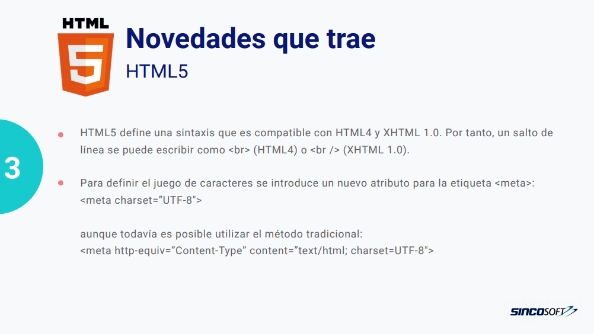
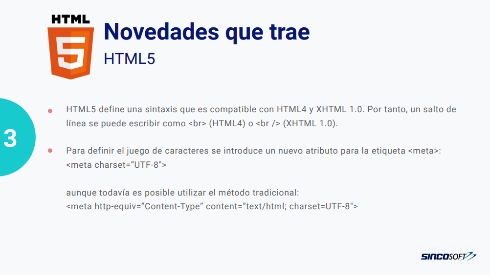
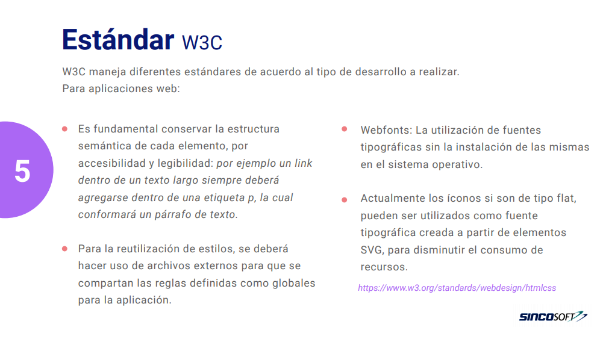
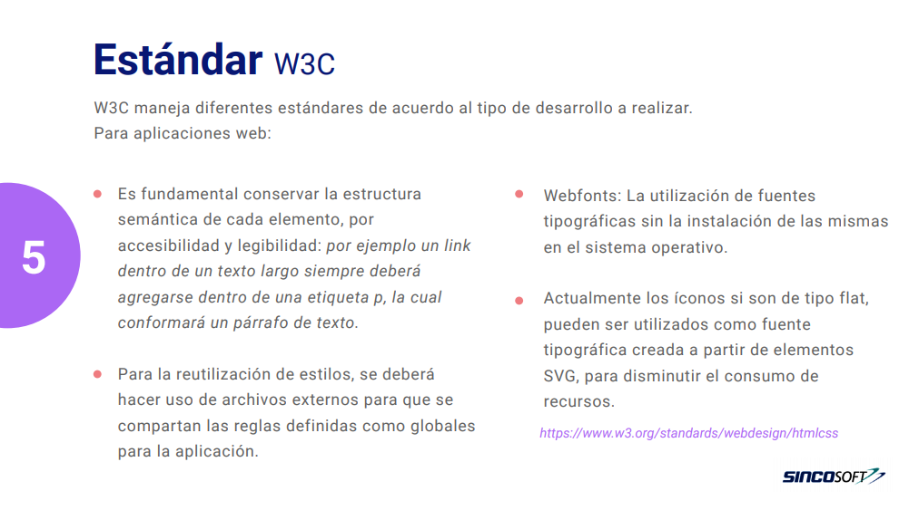
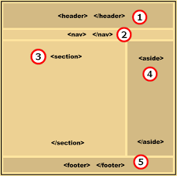
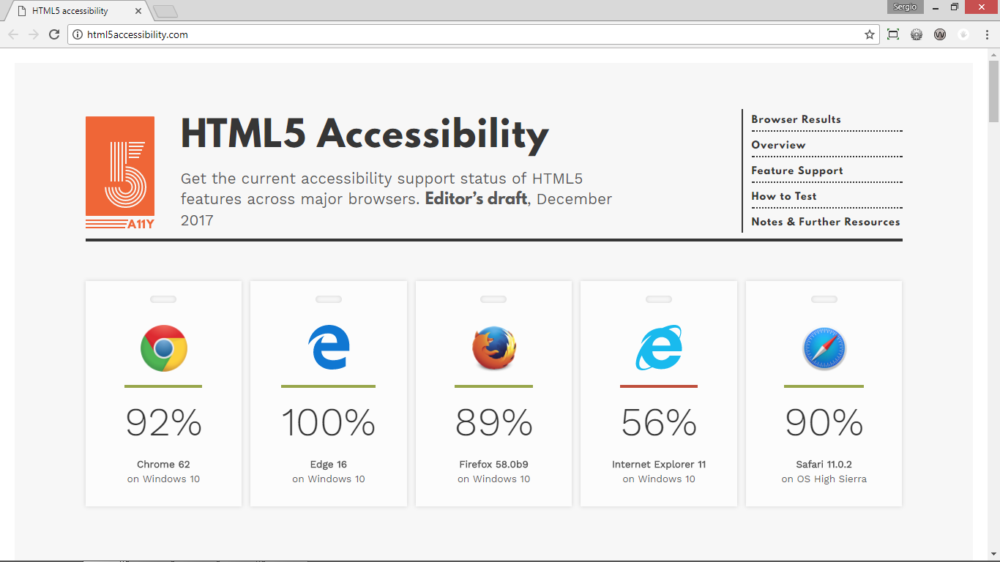

Hipertexto es una estructura no secuencial que permite crear, agregar, enlazar y
compartir información de diversas fuentes por medio de enlaces asociativos y
redes sociales.
El hipertexto es texto que contiene enlaces a otros textos y documentos
diseñados para mostrarse en un navegador web. Puede ser asistido por tecnologías como
hojas de estilo en cascada (CSS) y lenguajes de script como JavaScript.
El término fue acuñado por Ted Nelson alrededor del ano 1965
En el año 1980 un fisico llamado Tim Berners-Lee propuso el protyopo del
"ENQUIER" para compartir documentos.
A fines del año 1990, Berners-Lee escribió una nota proponiendo un sistema de
hipertexto basado en Internet.
Berners-Lee especificó HTML y escribió el navegador y el software del servidor. De
aqui fue publicado HTML 2.0 en 1995
HTML 4.01 se publicó a fines de 1999 y era una versión principal de
HTML.
HTML5 admite audio y video, mientras que ninguno de estos era parte de HTML.
HTML no permite que JavaScript se ejecute dentro del navegador web, mientras
que HTML5 proporciona soporte
completo para que JavaScript se ejecute en segundo plano. En HTML5, se pueden usar
MathML y SVG en línea en el texto, mientras que esto no era posible en HTML
BUENAS PREGUNTAS SOBRE HTML
“otro lenguaje porque?” Mientras el volumen de informacion crecia a los fines
del siglo 20, tambien crecia la frustracion.
habian mucho para consumir, processar, recordar indexar, y usar. Fue un sobre cargo de
informacion
pero que pasaria si todo el conocimiento del mundo pudiera ser organizado y hecho accecible
pra todos??
video de youtube "The computer Chronicles - Hypertext (1990)" estara disponible
abajo
“y esa vaina para-que?” -HTML, es un estándar para describir la estructura y
presentación de información a través de Internet.
Los desarrolladores web usan etiquetas o palabras clave HTML para indicar a la aplicación
del navegador web cómo formatear y mostrar
el contenido de las páginas web
“y eso desde cuando?” Desde idea inicial a realidad actual 1965-2019+ y
sigue continuamente evolucionando.
NO TE QUEDO CLARO? OPRIME EL BOTON!
 

 

El HTML semántico es el uso del marcado HTML para reforzar la
semántica, o el significado, de la información en páginas web y aplicaciones web,
en lugar de limitarse a definir su presentación o aspecto.
W3Schools define HTML semantico como.....
"usar elementos HTML correctos para su propósito correcto tanto como sea posible.
Los elementos semánticos son elementos con un significado"
El HTML semántico es usar elementos y etiquetas comprensibles para:
- Ayudar los Navegadores web tradicionales
- Ayudar a una persona "debuggin", editando o andiendo codigo
- Te ayuda a ti! en terminos des optimizacion en motores de busqueda S.E.O
- mas informacion sobre esto en la siguiente seccion
- Ayudar organicacion & memorizacion

El posicionamiento en buscadores, posicionamiento web u Optimizador de motores de
búsqueda S.E.O por sus siglas en inglés, de Search Engine
Optimization que traduce, ‘Optimización para motores de búsqueda’
es: el proceso de mejorar la visibilidad de un sitio web en los diferentes buscadores,
como Google, Bing o Yahoo de manera orgánica,
es decir sin pagarle dinero al buscador para tener acceso a una posición destacada
en los resultados

W3Schools define HTML semantico como.....
Escribe HTML teniendo en cuenta la accesibilidad. Proporcione al usuario
una buena manera de navegar e interactuar con su sitio.
Haga que su código HTML sea lo más semántico posible, de modo
que el código sea fácil de entender para los visitantes y lectores de pantalla.
